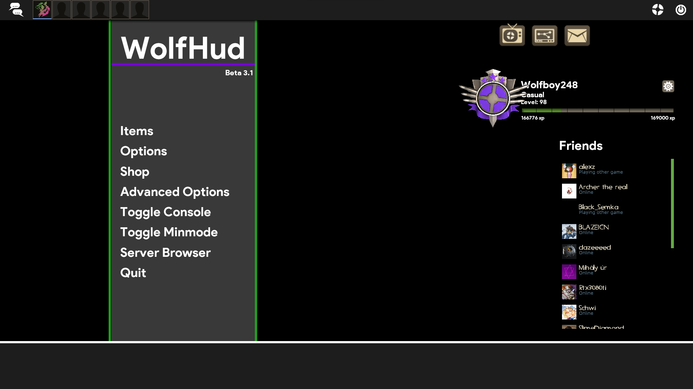
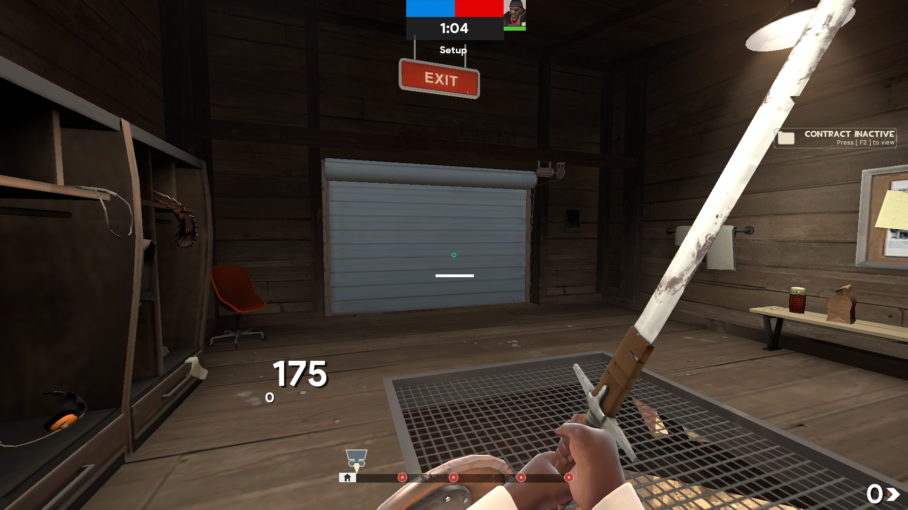
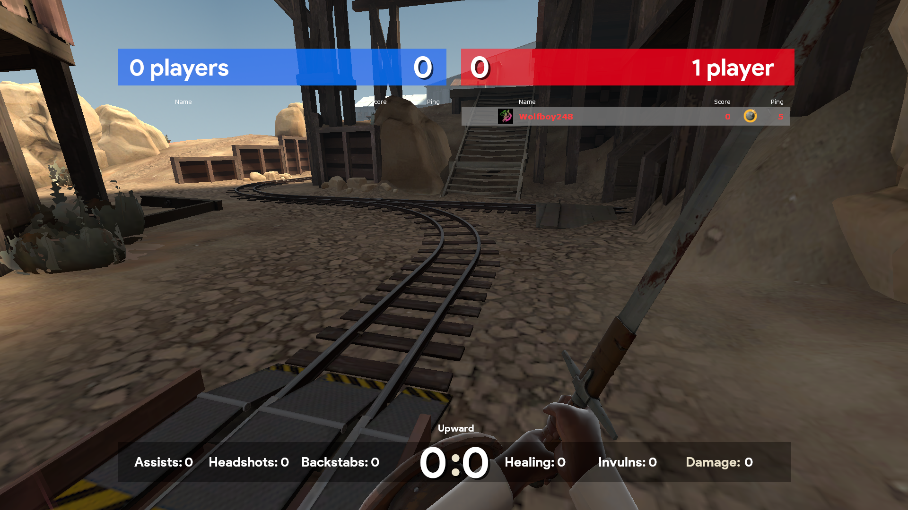
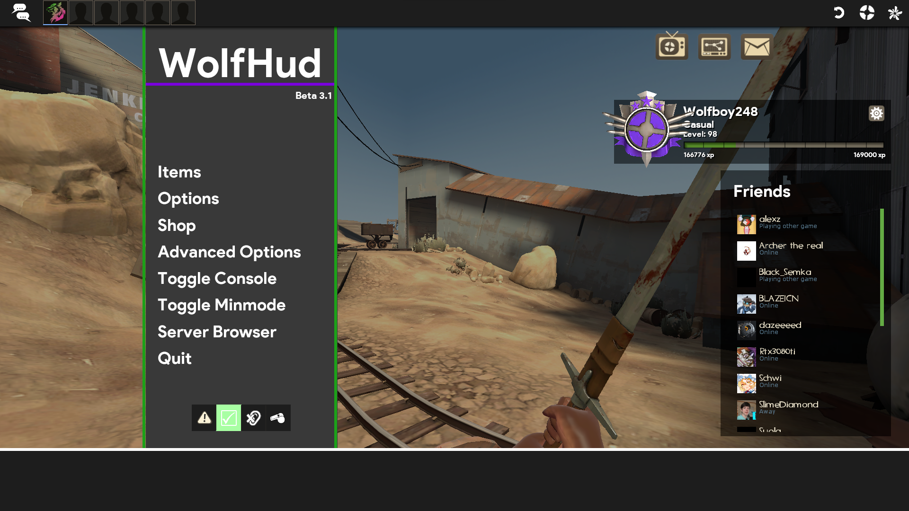
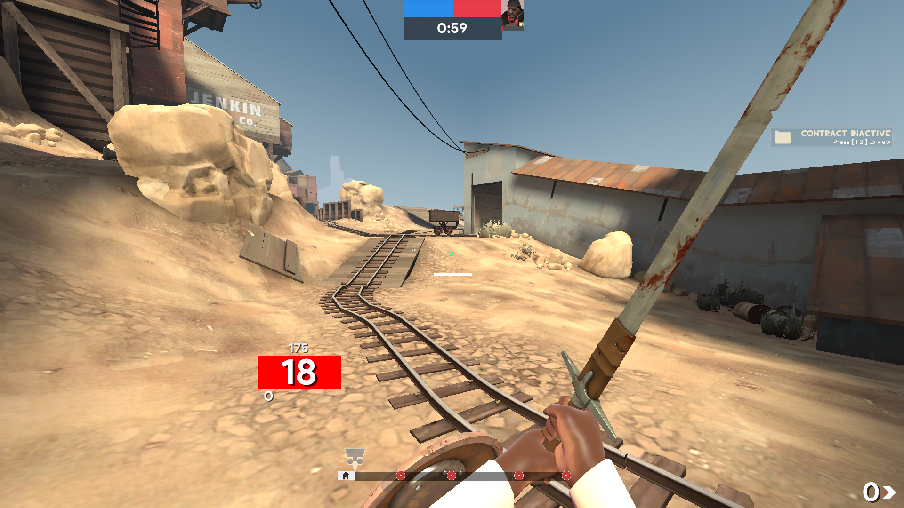
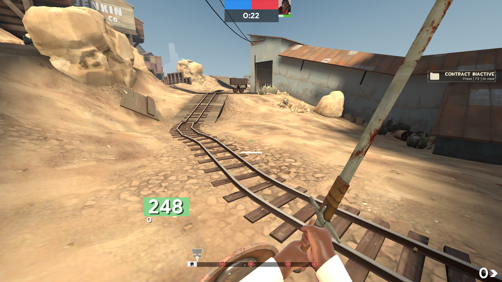

WolfHud
WolfHud is an open source Team Fortress 2 HUD. The HUD is supposed to be a clean HUD with many quality of life improvements to the default TF2 HUD. You can find the Github page
here
.
Download the HUD
     